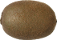
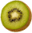
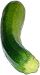
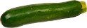

    <!-- the parts i need for drawing -->
      
      
      
      
      
      
      
      
      
      
      
      
      
      
      
      
      
      
      
      
      
      
      
      
      
    <!-- end  parts we need for drawing -->
      
    <!-- -->
    

    <script src="//ajax.googleapis.com/ajax/libs/jquery/2.0.3/jquery.min.js"></script>
    <script src="js/bower_components/underscore/underscore.js"></script>
    <script src="js/bower_components/raf.js/raf.js"></script>
    <script src="js/lib/fe.js"></script>
    <script src="js/veganizer2.js"></script>
    <script>
    before = function (c) { append(c); } 
    step = function(c) { dappend(c); }
    finish = function (c) { dappend(c); }
    collectParts('.parts', function(parts)
    {
      FE.byImage($('#testimage').get(0), (
        function(c) { 
          drawWithPicsInsteadOfPixels(c, parts, 0.55, before, step, finish)
        }
      ))
    });
</script>